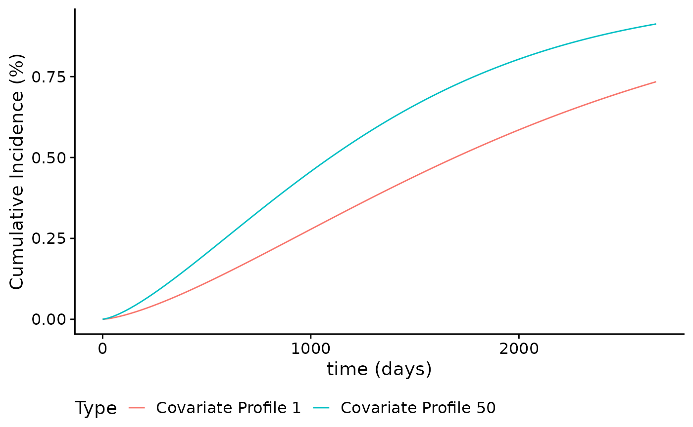
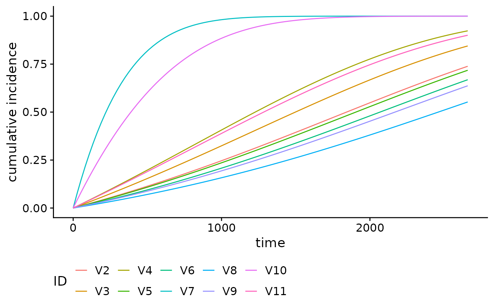
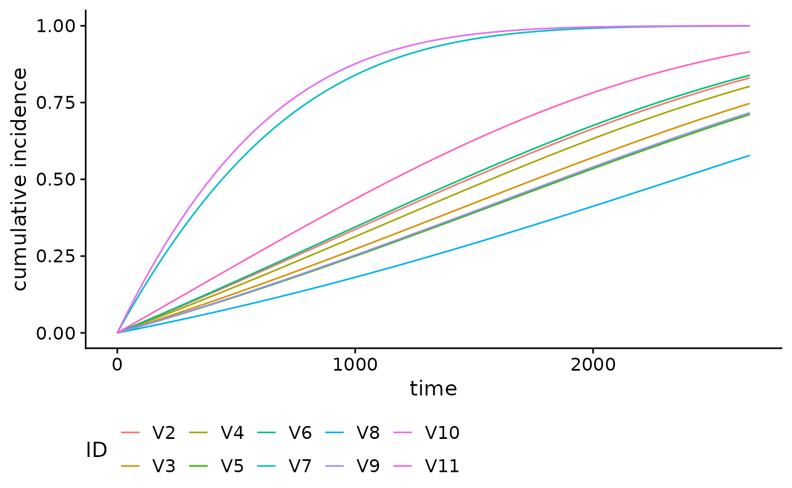

Plot Cumulative Incidence and Survival Curves
Sahir Rai Bhatnagar
2024-04-09
Source:vignettes/plotabsRisk.Rmd
plotabsRisk.RmdIntroduction
In this short vignette, we will introduce the plot
method for absoluteRisk objects. This method allows you to
plot cumulative incidence (CI) or survival curves as a function of time
and a given covariate profile. More specifically, the cumulative
incidence is given by:
\[ CI(x, t) = 1 - exp\left[ - \int_0^t h(x, u) \textrm{d}u \right] \] where \( h(x, t) \) is the hazard function, \( t \) denotes the numerical value (number of units) of a point in prognostic/prospective time and \( x \) is the realization of the vector \( X \) of variates based on the patient’s profile and intervention (if any). And the survival function is given by \[ S(x, t) = 1 - CI(x,t) = exp\left[ - \int_0^t h(x, u) \textrm{d}u \right] \]
Analysis of the brcancer dataset
To illustrate hazard function plots, we will use the breast cancer
dataset which contains the observations of 686 women taken from the TH.data
package. This dataset is also available from the casebase
package. In the following, we will show the CI curve for several
covariate profiles.
library(casebase)
#> See example usage at http://sahirbhatnagar.com/casebase/
library(survival)
library(ggplot2)
data("brcancer")
mod_cb_glm <- fitSmoothHazard(cens ~ estrec*log(time) +
horTh +
age +
menostat +
tsize +
tgrade +
pnodes +
progrec,
data = brcancer,
time = "time", ratio = 10)
summary(mod_cb_glm)Plotting Cumulative Incidence Curves
We can use the plot method for objects of class
absRiskCB, which is returned by the
absoluteRisk function, to plot cumulative incidence curves.
For example, suppose we want to compare the cumulative incidence curves
of the 1st and 50th individuals in the brcancer dataset. We
first call the absoluteRisk function and specify the
newdata argument. Note that since time is missing, the risk
estimate is calculated at the observed failure times.
smooth_risk_brcancer <- absoluteRisk(object = mod_cb_glm,
newdata = brcancer[c(1,50),])
class(smooth_risk_brcancer)
plot(smooth_risk_brcancer)
These curves can be further customized. For example, suppose we want to change the legend title and legend keys:
plot(smooth_risk_brcancer,
id.names = c("Covariate Profile 1","Covariate Profile 50"),
legend.title = "Type",
xlab = "time (days)",
ylab = "Cumulative Incidence (%)") 
The call to plot on a absRiskCB object
returns a ggplot2 object, and therefore can be used
downstream with other ggplot2 functions. For example,
suppose we want to change the theme:
plot(smooth_risk_brcancer,
id.names = c("Covariate Profile 1","Covariate Profile 50"),
legend.title = "Type",
xlab = "time (days)",
ylab = "Cumulative Incidence (%)") + ggplot2::theme_linedraw() 
Using graphics::matplot
By default, the plot method uses ggplot2 to
produce the curves. Alternatively, you can use
graphics::matplot by specifying gg = FALSE.
This option is particularly useful if you want to add the cumulative
incidence curve to an existing plot, e.g., adding the adjusted smooth
curve to a Kaplan-Meier curve. In this example, we calculate the
cumulative incidence for a typical individual in the
dataset:
cols <- c("#8E063B","#023FA5")
smooth_risk_typical <- absoluteRisk(object = mod_cb_glm, newdata = "typical")
y <- with(brcancer, survival::Surv(time, cens))
plot(y, fun = "event", conf.int = F, col = cols[1], lwd = 2)
plot(smooth_risk_typical, add = TRUE, col = cols[2], lwd = 2, gg = FALSE)
legend("bottomright",
legend = c("Kaplan-Meier", "casebase"),
col = cols,
lty = 1,
lwd = 2,
bg = "gray90")
Survival Curves
We can also easily calculate and plot survival curves by specifying
type = 'survival' in the call to absoluteRisk.
The corresponding call to plot is the same as with
cumulative incidence curves:
smooth_surv_brcancer <- absoluteRisk(object = mod_cb_glm,
newdata = brcancer[c(1,50),],
type = "survival")
plot(smooth_surv_brcancer)
Other families
glmnet
We can also plot cumulative incidence curves for other families. For
example, using the family = "glmnet", we can plot the
cumulative incidence curves for the first 10 individuals in the
brcancer dataset, using the tuning parameter which
minimizes the 10-fold cross-validation error (\(\lambda_{min}\)):
mod_cb_glmnet <- fitSmoothHazard(cens ~ estrec*time +
horTh +
age +
menostat +
tsize +
tgrade +
pnodes +
progrec,
data = brcancer,
time = "time",
ratio = 1,
family = "glmnet")
smooth_risk_glmnet <- absoluteRisk(object = mod_cb_glmnet,
newdata = brcancer[1:10,],
s = "lambda.min")
plot(smooth_risk_glmnet)
gam
Here we produce the same plot but for family = "gam" for
generalised additive models.
mod_cb_gam <- fitSmoothHazard(cens ~ estrec + time +
horTh +
age +
menostat +
tsize +
tgrade +
pnodes +
progrec,
data = brcancer,
time = "time",
ratio = 1,
family = "gam")
smooth_risk_gam <- absoluteRisk(object = mod_cb_gam,
newdata = brcancer[1:10,])
plot(smooth_risk_gam)